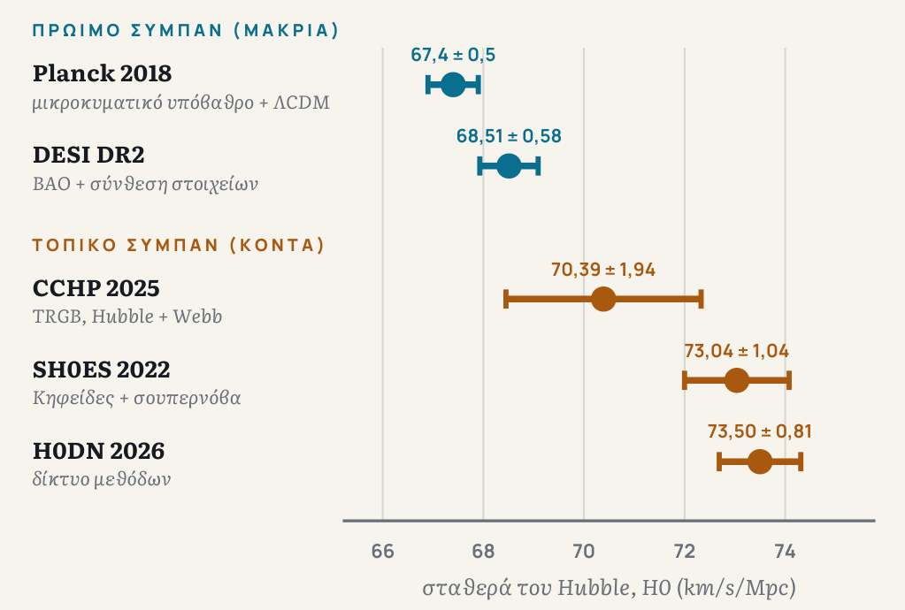

Ένα από τα πιο απλά ερωτήματα της κοσμολογίας είναι και ένα από τα πιο δύσκολα: πόσο γρήγορα διαστέλλεται το σύμπαν σήμερα; Η απάντηση εκφράζεται με τη σταθερά του Hubble, H0, που δίνει την ταχύτητα με την οποία απομακρύνεται ένας γαλαξίας ανάλογα με την απόστασή του. Μετριέται σε χιλιόμετρα ανά δευτερόλεπτο ανά megaparsec (km/s/Mpc), όπου ένα megaparsec είναι περίπου 3,26 εκατομμύρια έτη φωτός. Με H0 ίσο με 70, ένας γαλαξίας σε απόσταση 100 Mpc απομακρύνεται με περίπου 7.000 km/s.
Η σταθερά δεν είναι λεπτομέρεια. Καθορίζει την κλίμακα του σύμπαντος: πόσο μακριά βρίσκονται τα πράγματα, πόσο μεγάλα είναι πραγματικά και πόσο παλιό είναι το ίδιο το σύμπαν. Αν το πρότυπο μοντέλο και η άμεση μέτρηση δεν συμφωνούν, κάτι από τα δύο έχει πρόβλημα.
Το πρόβλημα είναι ότι υπάρχουν δύο τρόποι να μετρήσεις τη σταθερά, και δεν συμφωνούν.
Δύο χάρακες
Ο πρώτος χάρακας βρίσκεται μακριά και πολύ πίσω στον χρόνο. Το κοσμικό μικροκυματικό υπόβαθρο, το αρχαίο φως του πρώιμου σύμπαντος, φέρει ένα μοτίβο που ξέρουμε να διαβάζουμε. Αν δεχτούμε το πρότυπο μοντέλο της κοσμολογίας, το ΛCDM (ένα σύμπαν με συνηθισμένη ύλη, ψυχρή σκοτεινή ύλη και σταθερή σκοτεινή ενέργεια), το μοτίβο προβλέπει πόσο γρήγορα πρέπει να διαστέλλεται το σύμπαν σήμερα. Η ανάλυση των δεδομένων του διαστημικού τηλεσκοπίου Planck δίνει περίπου 67,4 ± 0,5 km/s/Mpc.
Ο δεύτερος χάρακας βρίσκεται κοντά και μετρά το τώρα. Είναι η «σκάλα των αποστάσεων»: ξεκινάς από αστέρια των οποίων την απόσταση μπορείς να μετρήσεις γεωμετρικά, τα χρησιμοποιείς για να βαθμονομήσεις τους Κηφείδες, μεταβλητά αστέρια με γνωστή σχέση ανάμεσα στην περίοδο και τη φωτεινότητά τους, και αυτούς για να βαθμονομήσεις τα σουπερνόβα τύπου Ια, που φαίνονται σε τεράστιες αποστάσεις. Με αυτή τη σκάλα, η ομάδα SH0ES βρήκε το 2022 73,04 ± 1,04 km/s/Mpc.
Η διαφορά είναι περίπου 8%, και δεν εξασθενεί με τα χρόνια: μεγαλώνει. Το 2016 η ομάδα SH0ES έβρισκε 73,2 ± 1,7, 3,4σ πάνω από την τιμή που έδινε τότε το Planck (66,9 ± 0,6). Το 2022, με περισσότερα δεδομένα, η διαφορά έφτασε τα 5σ. Ένα σίγμα είναι το μέγεθος της αβεβαιότητας: αν προσθέσεις τα σφάλματα των δύο τιμών σε τετράγωνο, η διαφορά τους είναι περίπου 4,9 φορές μεγαλύτερη από τη συνδυασμένη αβεβαιότητα. Στατιστικά, δύσκολα εξηγείται από τύχη. Γι' αυτό μιλάμε για «ένταση» (tension) και όχι απλώς για διαφορά.
Πρόβλεψη από το μικροκυματικό υπόβαθρο και το ΛCDM (Planck 2018): 67,4 ± 0,5 km/s/Mpc. Άμεση μέτρηση με τη σκάλα των αποστάσεων (SH0ES, 2022): 73,04 ± 1,04 km/s/Mpc. Η διαφορά ξεπερνά τα 5σ, σύμφωνα με τους συγγραφείς της δεύτερης μέτρησης.
Ποιος έχει δίκιο;
Το πρώτο ερώτημα είναι αν το λάθος κρύβεται στη σκάλα. Κάθε σκαλοπάτι στηρίζεται στο προηγούμενο και μικρά συστηματικά σφάλματα μπορεί να συσσωρεύονται: αστέρια που μπερδεύονται στην εικόνα, σκόνη, διαφορές στη χημική σύσταση. Το διαστημικό τηλεσκόπιο James Webb επιτρέπει έναν έλεγχο με πολύ μεγαλύτερη ανάλυση. Σύμφωνα με την ομάδα του Adam Riess, στις μετρήσεις που έχουν γίνει οι αποστάσεις του Webb συμφωνούν με εκείνες του Hubble, κάτι που αποκλείει αρκετές από τις υποψήφιες πηγές σφάλματος.
Και εδώ αρχίζει η διαφωνία. Η ομάδα της Wendy Freedman χρησιμοποιεί άλλα σκαλοπάτια: όχι τους Κηφείδες, αλλά την κορυφή του κλάδου των ερυθρών γιγάντων (TRGB) και τα αστέρια JAGB. Και οι δύο στηρίζονται σε ψυχρά, εξελιγμένα αστέρια με σχεδόν σταθερή φωτεινότητα, που λειτουργούν ως «κεριά» για τις αποστάσεις. Με δεδομένα του Hubble και του Webb, βρήκε το 2025 70,39 ± 1,22 (στατιστικό) ± 1,33 (συστηματικό) ± 0,70 (σουπερνόβα) km/s/Mpc και υποστηρίζει ότι το αποτέλεσμα συμφωνεί με το ΛCDM χωρίς νέα φυσική. Με δεδομένα μόνο του Webb, οι δύο μέθοδοι έδωσαν ακόμη χαμηλότερες τιμές, 68,8 και 67,8. Η αντίθετη πλευρά απαντά ότι η χαμηλότερη τιμή οφείλεται στο μικρότερο δείγμα σουπερνόβα που χρησιμοποιήθηκε.
Το ενδιαφέρον είναι ότι οι δύο ομάδες δεν διαφωνούν πολύ για τις ίδιες τις αποστάσεις. Οι συγγραφείς της CCHP αναφέρουν ότι οι αποστάσεις που βρίσκουν με τις δικές τους μεθόδους συμφωνούν με εκείνες των Κηφείδων της SH0ES σε επίπεδο λίγο πάνω από 1%. Η διαφωνία μετατοπίζεται λοιπόν σε άλλα σημεία της αλυσίδας, όπως το πόσα σουπερνόβα βαθμονομούνται και πώς.
Το 2026 μια ξεχωριστή προσπάθεια επιχείρησε να βάλει τάξη. Το «Local Distance Network», που περιγράφεται ως έκθεση συναίνεσης της κοινότητας, συγκέντρωσε ειδικούς από πολλές ομάδες, ανάμεσά τους και ανταγωνιστικές, και συνδύασε πολλές μεθόδους σε ένα δίκτυο. Προέκυψε από ένα εργαστήριο περίπου 40 ειδικών και στόχος του ήταν το αποτέλεσμα να μη στηρίζεται σε μία μόνο μέθοδο, δείγμα ή ομάδα. Δημοσιεύθηκε στις 10 Απριλίου 2026 και δίνει 73,50 ± 0,81 km/s/Mpc, μια ακόμη πιο ακριβή τιμή, που απέχει 7,1σ από την πρόβλεψη του πρώιμου σύμπαντος και 5,0σ από μια τρίτη πρόβλεψη, ανεξάρτητη από το μικροκυματικό υπόβαθρο, που βασίζεται στα δεδομένα του DESI: 68,51 ± 0,58.
Η χαμηλή πλευρά δεν στηρίζεται λοιπόν σε ένα μόνο όργανο: το μικροκυματικό υπόβαθρο και το DESI, δύο εντελώς διαφορετικοί τρόποι να διαβάσεις το πρώιμο σύμπαν, καταλήγουν κοντά στο 67–68,5. Μια ανασκόπηση του 2026 σημειώνει ότι και ο συνδυασμός των δεδομένων του Planck με εκείνα των τηλεσκοπίων SPT και ACT δίνει 66,66 ± 0,60, κάτι που κάνει δύσκολο να θεωρηθεί το πρόβλημα προϊόν ενός μόνο οργάνου. Η υψηλή πλευρά, με τη σειρά της, δεν κρέμεται από ένα μόνο σκαλοπάτι: το δίκτυο δοκίμασε παραλλαγές της ανάλυσης και, ακόμη και χωρίς τους Κηφείδες, η τιμή έπεσε μόλις κατά ένα km/s/Mpc, στο 72,5. Και μέθοδοι που δεν χρησιμοποιούν καθόλου τη σκάλα, όπως οι χρονικές καθυστερήσεις του φωτός σε βαρυτικούς φακούς, έχουν δώσει επίσης υψηλές τιμές, γύρω στο 73,3 (H0LiCOW).
Θα μπορούσε η σκοτεινή ενέργεια να είναι η λύση; Οι πρόσφατες ενδείξεις του DESI ότι ίσως αλλάζει με τον χρόνο (δες το σχετικό κείμενο σε αυτό το τεύχος) δεν φαίνεται να βοηθούν: σύμφωνα με το CERN Courier, η συμπεριφορά που θα χρειαζόταν για να συμβιβαστούν οι δύο τιμές αποκλείεται ισχυρά από τα ίδια δεδομένα.


Τα δεδομένα του διαγράμματος
| Πεδίο | Μέτρηση και μέθοδος | H0 |
|---|---|---|
| Πρώιμο σύμπαν (μακριά) | Planck 2018 · μικροκυματικό υπόβαθρο + ΛCDM | 67,4 ± 0,5 |
| Πρώιμο σύμπαν (μακριά) | DESI DR2 · BAO + σύνθεση στοιχείων | 68,51 ± 0,58 |
| Τοπικό σύμπαν (κοντά) | CCHP 2025 · TRGB, Hubble + Webb | 70,39 ± 1,94 |
| Τοπικό σύμπαν (κοντά) | SH0ES 2022 · Κηφείδες + σουπερνόβα | 73,04 ± 1,04 |
| Τοπικό σύμπαν (κοντά) | H0DN 2026 · δίκτυο μεθόδων | 73,50 ± 0,81 |
Και αν το πρόβλημα είναι το «εδώ»;
Υπάρχει μια πιο ριζική εξήγηση, που αγγίζει ακριβώς το θέμα αυτού του τεύχους. Αν ζούμε σε μια περιοχή του σύμπαντος με μικρότερη πυκνότητα από τον μέσο όρο, ένα «κενό», η ύλη γύρω μας θα ρέει προς τα έξω και οι κοντινοί γαλαξίες θα φαίνονται να απομακρύνονται ταχύτερα. Οι τοπικές μετρήσεις θα έδιναν τότε υψηλότερη τιμή από τη «μέση» τιμή του συνόλου, ενώ το μακρινό σύμπαν θα έδινε τη σωστή.
Η ιδέα δεν βγήκε από το πουθενά. Μετρήσεις της κατανομής των γαλαξιών από τους Keenan, Barger και Cowie έδειξαν ότι γύρω από τον Γαλαξία μας υπάρχει μια υποπυκνότητα, το «κενό KBC», που εκτείνεται ως τα περίπου 300 Mpc. Το 2020 μια ομάδα υπολόγισε ότι ένα τέτοιο κενό θα μπορούσε, κατ' αρχήν, να εξηγήσει την ένταση, αλλά ότι στο πλαίσιο του τυπικού ΛCDM θα ήταν το ίδιο ένα πρόβλημα, επειδή ένα τόσο μεγάλο κενό θα ήταν εξαιρετικά σπάνιο: η ίδια ανάλυση το υπολογίζει σε περίπου 6σ. Το 2019 οι Kenworthy, Scolnic και Riess είχαν συμπεράνει από τα σουπερνόβα ότι τόσο μεγάλα κενά αποκλείονται στατιστικά και ότι η τοπική δομή δεν επηρεάζει τη μέτρηση. Μια εργασία του 2025 υποστηρίζει ότι εκείνος ο έλεγχος δεν καλύπτει όλα τα μοντέλα κενού που έχουν προταθεί.
Εδώ βρίσκεται και το κόστος της ιδέας. Η αρχή του Κοπέρνικου, ότι δεν κατέχουμε προνομιακή θέση στο σύμπαν, υπάρχει σε όλα τα κοσμολογικά μοντέλα. Ένα κενό τέτοιου μεγέθους θα σήμαινε ότι το «εδώ» μας είναι ασυνήθιστο.
Δεν υπάρχει καθιερωμένη εξήγηση. Οι κύριες υποψήφιες είναι τρεις: άγνωστα συστηματικά σφάλματα σε κάποιο σκαλοπάτι της σκάλας, νέα φυσική στο πρώιμο σύμπαν ή μια ασυνήθιστη τοπική δομή. Η υπόθεση του κενού παραμένει αμφισβητούμενη και δεν είναι η κυρίαρχη άποψη.
Οι δύο χάρακες έχουν ελεγχθεί πολλές φορές. Συνεχίζουν να διαφωνούν.
Η ένταση Hubble θυμίζει κάτι που ο Ερατοσθένης ήξερε ήδη: κάθε μέτρηση γίνεται από κάπου, και το συμπέρασμα ισχύει όσο ισχύουν οι υποθέσεις που το συνδέουν με το σύνολο.
Ο πρώτος χάρακας είναι μια εικόνα του πρώιμου σύμπαντος, μεταφρασμένη από ένα θεωρητικό μοντέλο. Ο δεύτερος είναι μια αλυσίδα τοπικών μετρήσεων, συνδεδεμένων με ένα άλλο σύνολο υποθέσεων. Όταν διαφωνούν, δεν ξέρουμε αν φταίει το όργανο, το μοντέλο ή η ίδια η υπόθεση ότι το «εδώ» μας είναι τυπικό. Η τελευταία, η αρχή του Κοπέρνικου, δεν είναι πόρισμα. Είναι μια επιλογή που αξίζει να ελέγχεται.
Η διαφωνία είναι, με αυτή την έννοια, παραγωγική: αν όλα συμφωνούσαν, δεν θα είχαμε λόγο να ρωτήσουμε πού βρισκόμαστε. Το ερώτημα που μένει ανοιχτό είναι αν η ένταση Hubble θα κλείσει με καλύτερο έλεγχο των οργάνων, με μια νέα θεωρία για το πρώιμο σύμπαν ή με μια νέα απάντηση στο πού βρίσκεται το «εδώ». Περισσότερα δεδομένα από το Webb, ανεξάρτητες μέθοδοι και μεγάλες έρευνες όπως το DESI και το Rubin, που συναντάς σε αυτό το τεύχος, θα δείξουν προς τα πού γέρνει η ζυγαριά.
Πηγές και περαιτέρω ανάγνωση
- Planck Collaboration, «Planck 2018 results. VI. Cosmological parameters», Astronomy & Astrophysics 641, A6 (2020)
- A. G. Riess et al., «A Comprehensive Measurement of the Local Value of the Hubble Constant with 1 km/s/Mpc Uncertainty…», The Astrophysical Journal Letters 934, L7 (2022)
- W. L. Freedman et al., «Status Report on the Chicago-Carnegie Hubble Program (CCHP): Measurement of the Hubble Constant Using the Hubble and James Webb Space Telescopes», The Astrophysical Journal 985, 203 (2025)
- H0DN Collaboration (S. Casertano et al.), «The Local Distance Network: A community consensus report on the measurement of the Hubble constant at ~1% precision», Astronomy & Astrophysics (2026)
- NSF NOIRLab, δελτίο Τύπου για το Local Distance Network (10 Απριλίου 2026)
- CERN Courier, «The Hubble tension» (Μάρτιος 2025)
- «The Hubble tension: A decade review», arXiv:2606.20434 (2026, υπό υποβολή στο JCAP) — για τον συνδυασμό Planck+SPT+ACT
- M. Haslbauer, I. Banik, P. Kroupa, «The KBC void and Hubble tension contradict ΛCDM on a Gpc scale», Monthly Notices of the Royal Astronomical Society 499, 2845 (2020)
- W. D. Kenworthy, D. Scolnic, A. Riess, «The Local Perspective on the Hubble Tension: Local Structure Does Not Impact Measurement of the Hubble Constant», The Astrophysical Journal 875, 145 (2019)
- «Testing the local supervoid solution to the Hubble tension with direct distance tracers», Monthly Notices of the Royal Astronomical Society 543, 1556 (2025)
Διάβασε το άρθρο στην πρωτότυπη σελιδοποίηση · Τεύχος 02, σελίδες 28–35